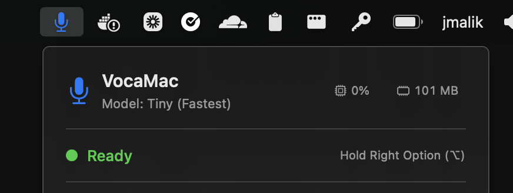
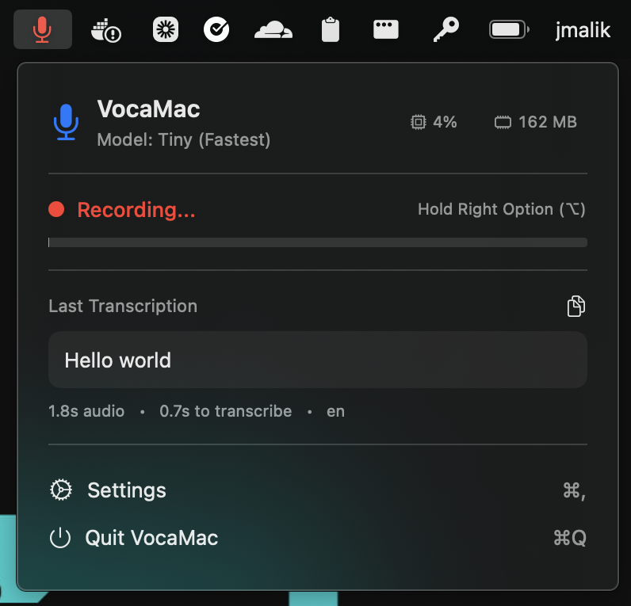
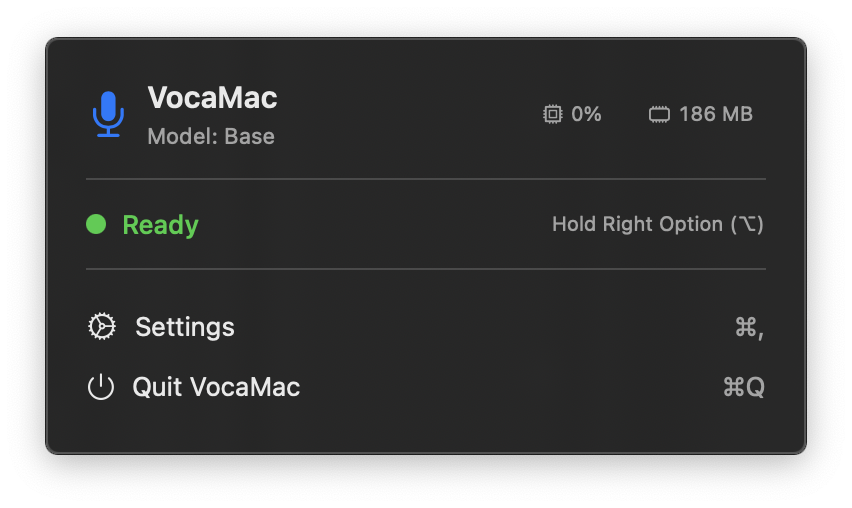
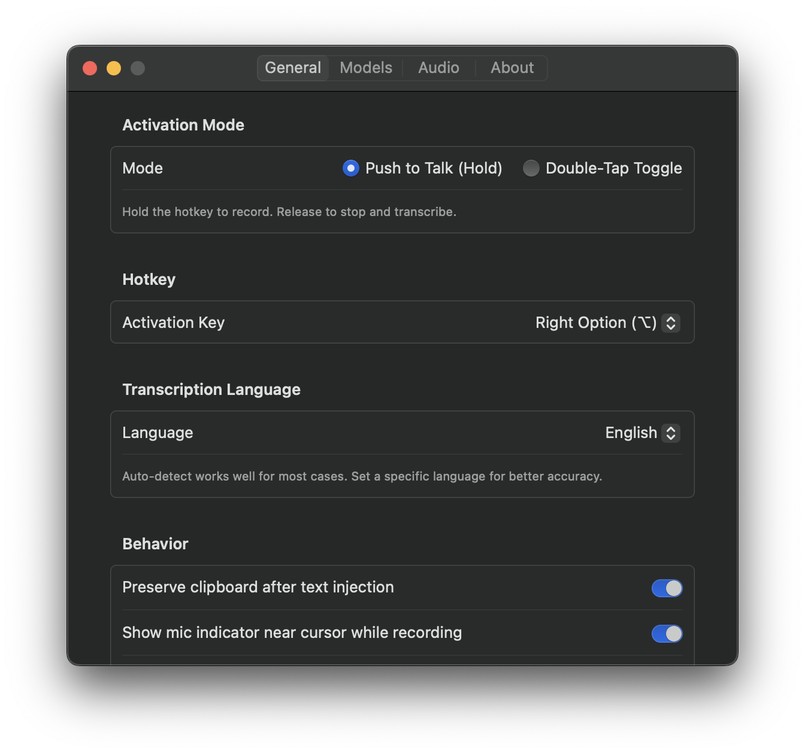
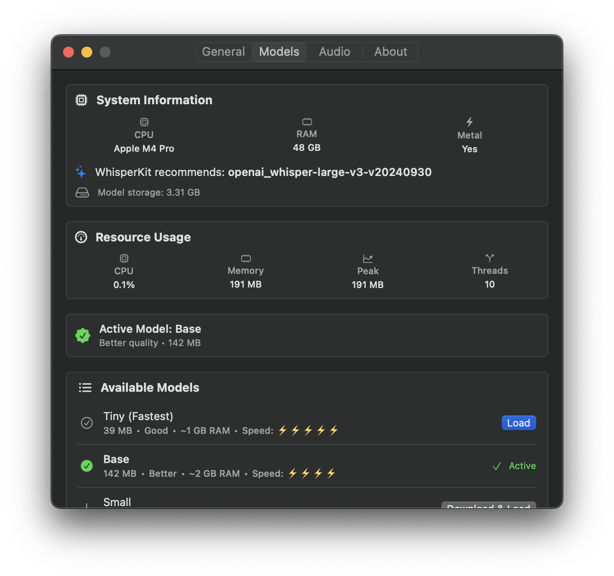
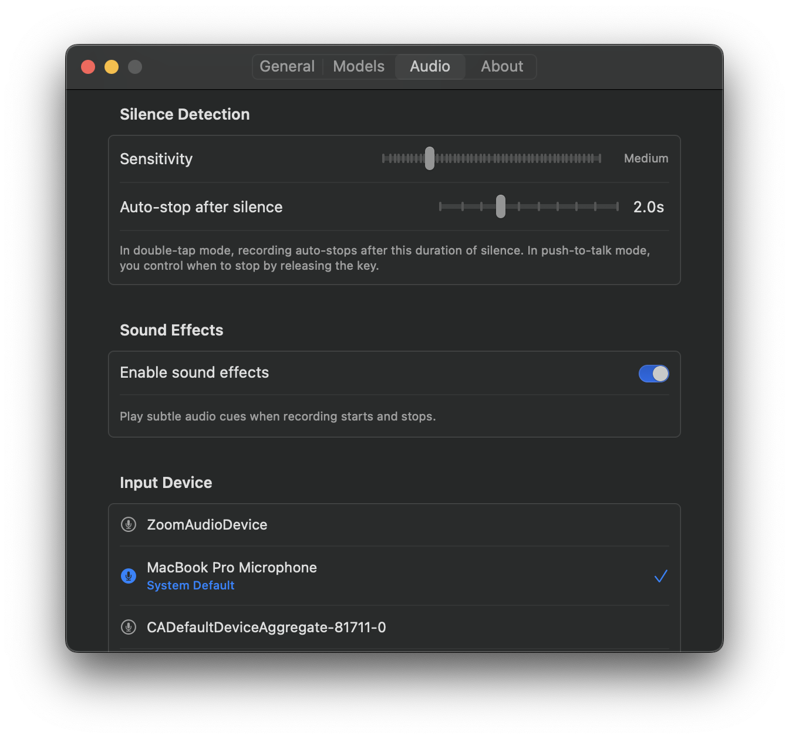
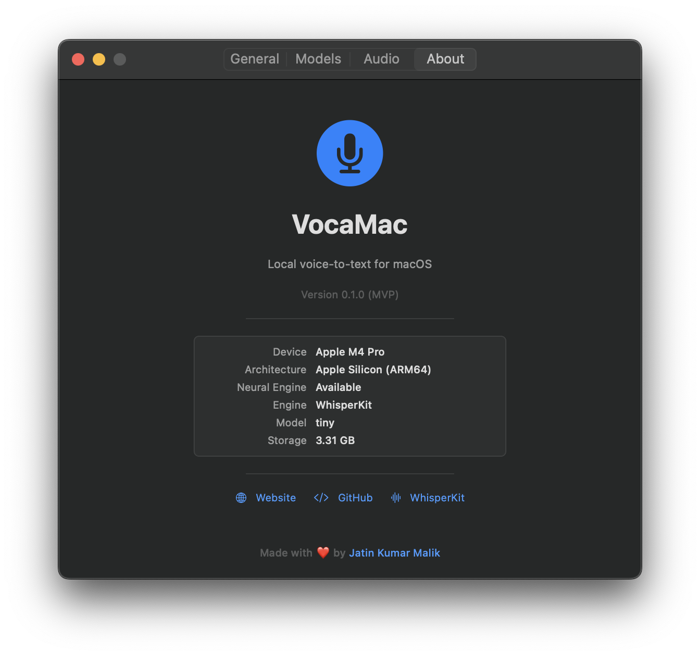
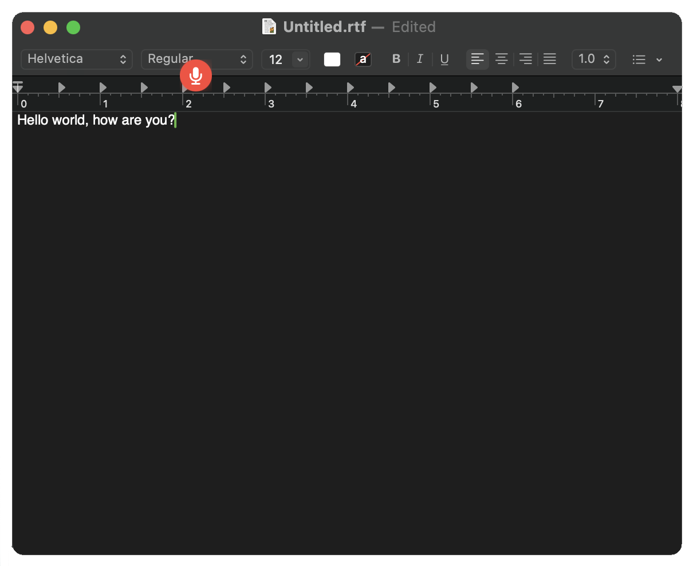

See VocaMac in action — from the menu bar to settings to the recording indicator.
VocaMac lives in your menu bar — always accessible, never in the way.


Click the menu bar icon to see status, last transcription, and quick actions.

Fine-tune everything — hotkeys, models, audio, and more across dedicated tabs.




A floating mic indicator appears near your text cursor while recording — so you always know VocaMac is listening.
